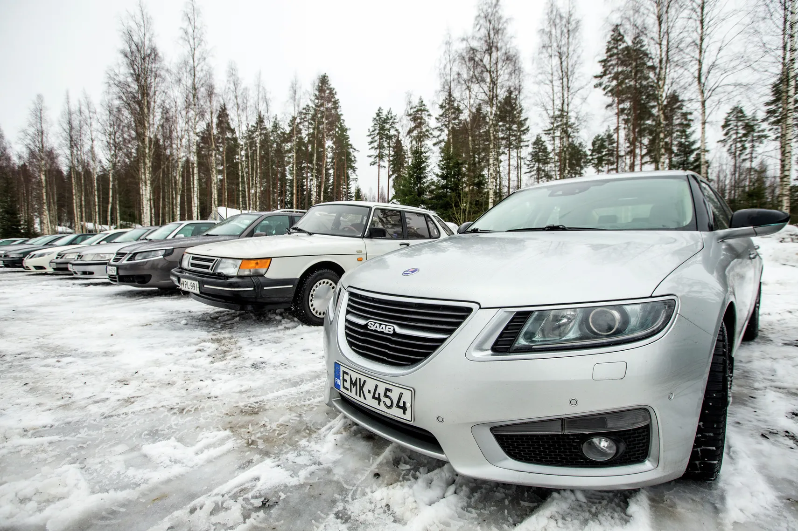
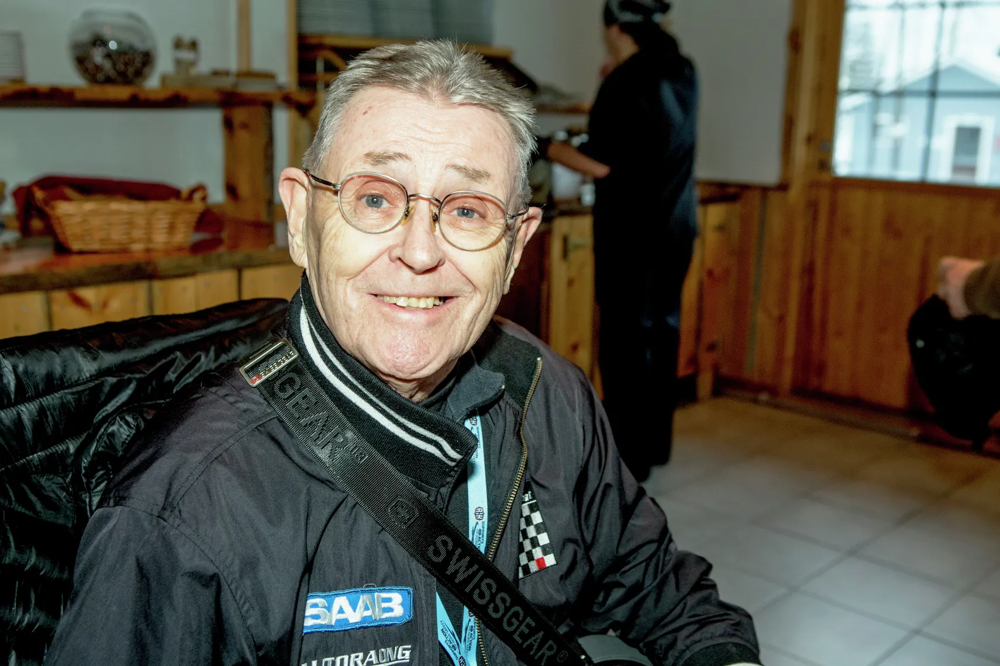
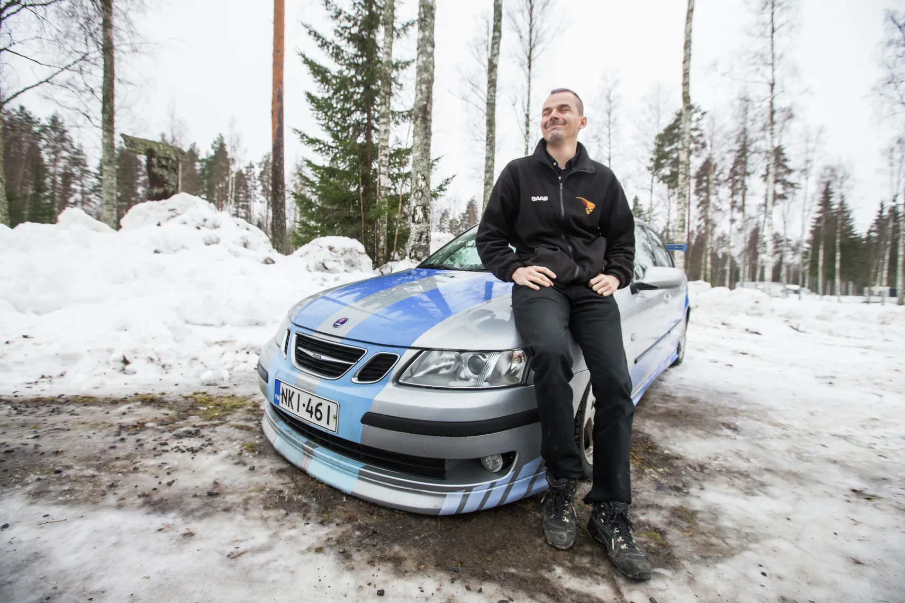
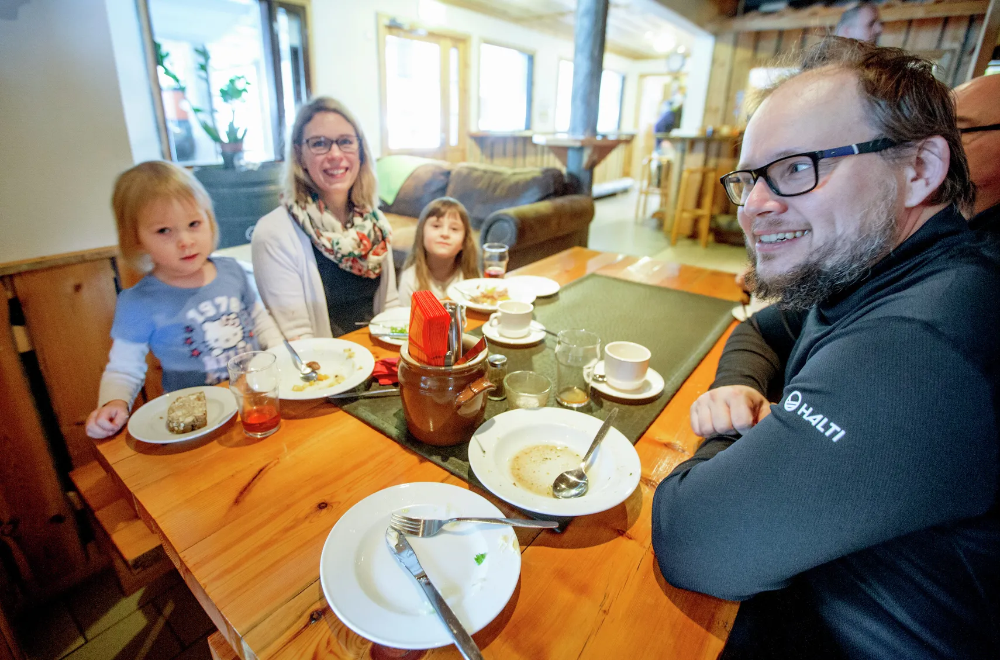
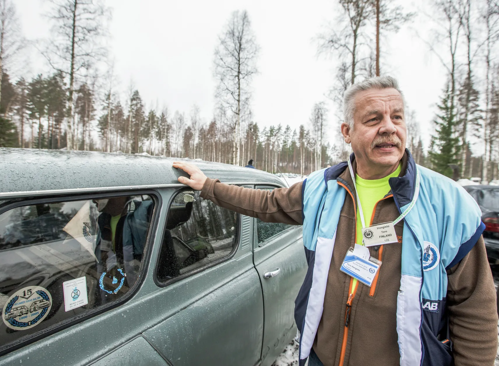
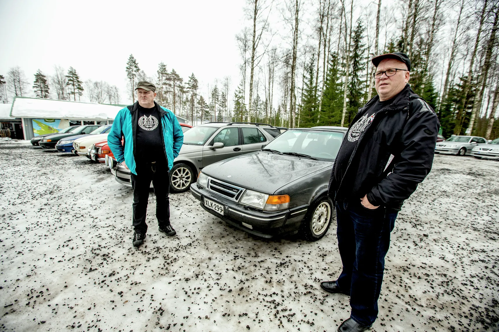

Saab lähtee pakkasella kuin palmun alta
Suomen Saab-klubi ry:n perinteiset talvipäivät ilahduttivat Savonlinnassa ja Rantasalmella. Varsinkin vanhemmista Saab-malleista löytyy sielukkuutta ja persoonallisuutta.
Vuoden 2011 jälkeen valmistetut Saabit ovat selvästi erinäköisiä verrattuna aikaisempiin vuosimalleihin.
Kuva: Tuija Pauhu
Suomen Saab-klubi ry:n tapahtumakoordinaattori Tero Hongiston mielestä suurin osa nykyautoista on kaikki samannäköisiä, persoonattomia kertakäyttöautoja.
Toista oli ennen. Jokainen automerkki oli persoonallisuus. Esimerkki Saab 96-mallilla oli useita eri lempinimiä. Silloin auton valoista näki jo pimeässä, mikä auto tulee vastaan.
Saab-klubin kunniajäsen, ralliautoilija, The Flying Finn Simo Lampinen ajoi rallia Saabilla vuonna
1961-1979.
Kuva: Tuija Pauhu
Hongisto ei väsy kehumaan Saabia. Saab on aina ollut teknologian edelläkävijä. Saab valmisti alun alkaen lentokoneita. SAAB on lyhennys sanoista Svenska Aeroplan Aktiebolaget.
Saabilla on monia hyviä erityisominaisuuksia. Saabin penkit ovat ergonomian edelläkävijöitä, mukavuus on kuin lentokapteenilla. Sen virta-avain on keskellä vaihdekepin vieressä. Saabissa on sammakko-iskunvaimentimet ja vapaakytkin.
Carl-Magnus Fager eli Nappe Vantaalta omistaa kolme Saabia. Tämän tuunatun Saab 9-3-mallin, avoauton ja
farmarimallin.
Kuva: Tuija Pauhu
Yhdistyksen jäseniä osallistui talvipäiville hieman toistasataa ja Saabeja noin viitisenkymmentä. Kun harrastajilta kysyi, miksi Saab, vastauksia tulee kuin apteekin hyllyltä.
Saab on helppo, lämmin ja luotettava talviauto. Se lähtee kuin palmun alta. Sen osaa itse korjata. Saabien keräily tulee halvaksi, koska Saabiin ei tule vähässä kummassa vikoja. Kun auton oven laittaa kiinni, Saabin tunnistaa ovenpaukauksesta vaikka silmät kiinni. Se ääni. Saabin kori ja ovet ovat rautaa, eivätkä mitään muovia.
-Iskällä on viisi Saabia ja äidillä yksi, sanoi nelivuotias Hilma Korpijaakko (kolmas vasemmalta). Mukana myös
Taimi Korpijaakko, äiti Mervi Louhisuo ja isä Tapio Korpijaakko.
Kuva: Tuija Pauhu
Saab on Kiirunan lentokoneraudasta tehty. Saab ei ole niin kuin muut. Eräs harrastaja ei tiennyt, minkälaista on ajaa muilla autoilla, koska oli aina ajanut vain Saabilla.
Suomen Saab-klubi ry on vuonna 1990 perustettu aatteellinen yhdistys. Jäseniä on lähes 4000, ja heidän autokantansa kattaa Saab-mallit 1950-luvun Saab 92:sta toistaiseksi viimeisiin vuonna 2014 valmistettuihin Saab 9–3 -malleihin.
Saabisteja löytyy muualtakin kuin Suomesta ja Ruotsista. Varsinkin japanilaisia Saab kiehtoo. Eräällä japanilaisella miehellä on kuusi Saabia.
Saab-klubin tapahtumakoordinaattori Tero Hongisto esittelee Saab 95STW-mallia vuodelta 1974.
Kuva: Tuija Pauhu
Saab-henkilöautoja valmistettiin aikoinaan myös Suomessa. Saabeja koottiin Uudenkaupungin autotehtaalla vuosina 1969–2003 yli 730 000 kappaletta.
Presidentti Urho Kekkosella oli erikoismalli Saab Finlandia. Suomalainen Saab oli myös ministeriöiden ja maaherrojen virka-autona. Esimerkiksi presidenttiehdokas Tuula Haataisella oli Saab virka-autonaan sosiaali- ja terveysministerinä olleessaan. Jossakin vaiheessa suurin osa poliisiautoista oli suomalaisia Saabeja.
Hongisto kertoo, että Saabin tarina jatkuu tekniikan edelläkävijänä. Kiinalais-ruotsalainen NEVS on aloittanut sähköautojen valmistuksen Kiinassa Saab 9–3 malliin.
Veljekset Juha ja Hannu Lemberg omistavat yhdessä Saab9000CD-mallin, jonka ensimmäinen omistaja oli
Keski-Suomen maaherra.
Kuva: Tuija Pauhu
Alkuperäinen julkaistu: 27.1.2018 18:30
Alkuperäinen lähde: https://ita-savo.fi/uutiset/lahella/d157cdd8-2780-4d9e-a6c5-ecbf3312c8f2
Alkuperäinen teksti: Minna-Liisa Riestola